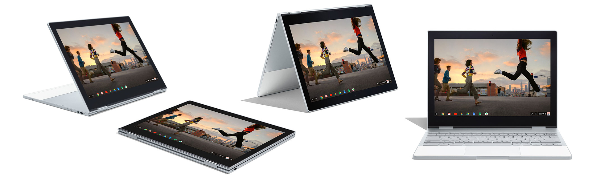
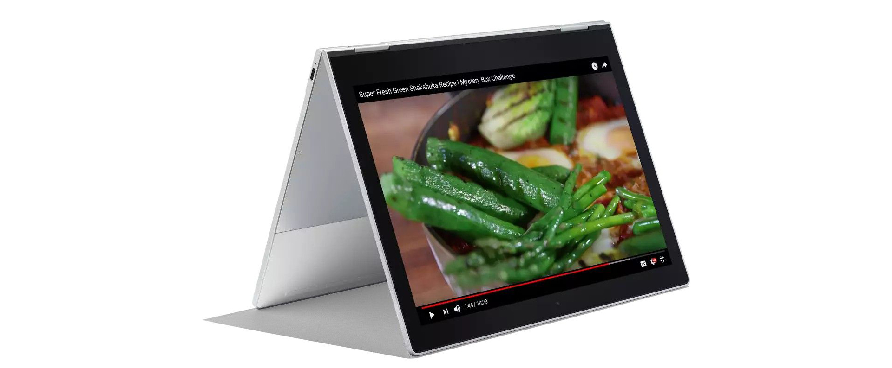
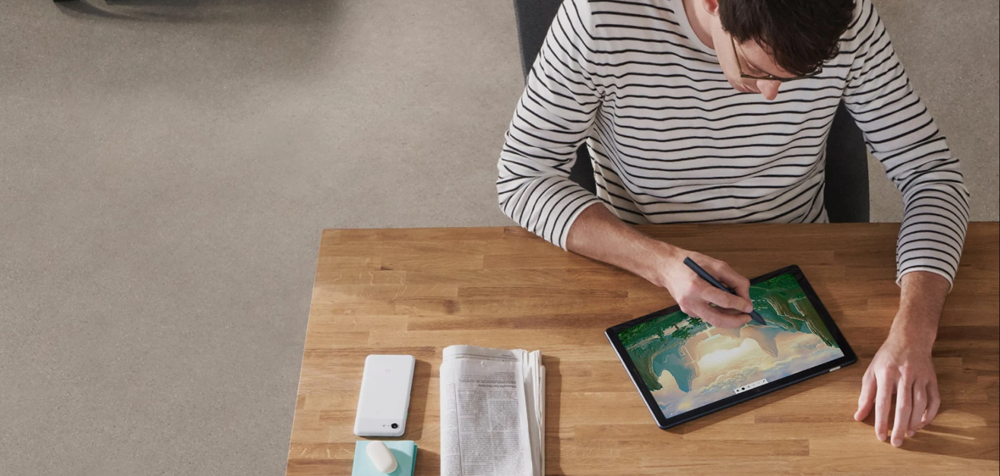
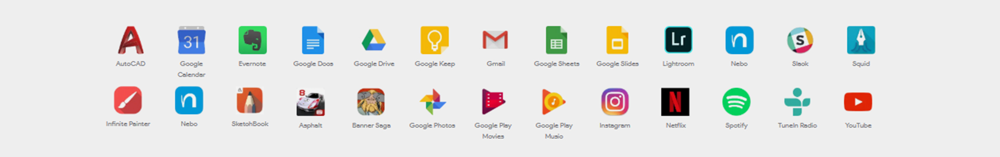
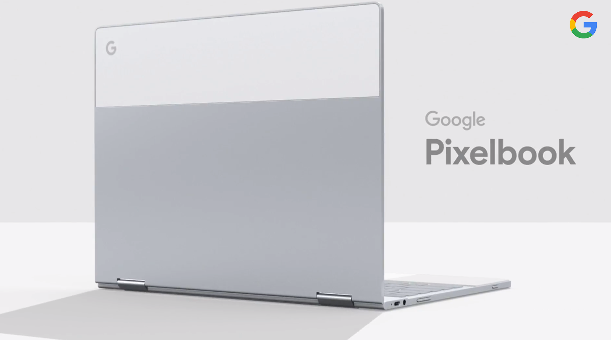

Apple MacBook
Б.В Google PixelBook ChromeBook C0A I7-7Y75 1.30 GHZ 16 GB RAM 512 GB
 Додати в список
Додати в список
- Ноутбук-трансформер
- Сенсорний екран
- Підсвітка клавіатури
- Google PixelBook ChromeBook C0A
- Intel I7-7Y75 1.30 GHZ
- 16GB RAM
- 512GB SSD
Опис
- Ідеальний косметичний стан, має декілька потертостей по корпусу
- Ідеальний робочий стан
- Ретельно перевірений та протестований
- Зарядний пристрій в комплекті
- Напишіть в телеграм, зробимо детальні фото та відео
- Є можливість зробити гравіювання клавіатури (400)
- Є можливість зробити гравіювання клавіатури (400)
- Google PixelBook ChromeBook C0A
- Intel I7-7Y75 1.30 GHZ
- 16GB RAM
- 512GB SSD
Один ноутбук. Неограниченные возможности Представляем Google Pixelbook — первый ультрабук “2 в 1” от Google с сенсорным экраном 360°, операционной системой Chrome OS и встроенным Google Assistant, который всегда готов помочь решить поставленную перед вами задачу, найти ответ на вопросы, управлять расписанием и многое другое. Мощная аппаратная конфигурация компактного устройства включает в себя двухъядерный процессор Intel Core i7-7Y75 7-го поколения, 16 ГБ оперативной памяти и высокоскоростной твердотельный накопитель емкостью 512 ГБ. Одного заряда батареи достаточно, чтобы работать и наслаждаться отдыхом в течение всего дня не беспокоясь о необходимости подзарядки. Google Pixelbook создан для работы, развлечений и мобильности.
Oдин, два, три, четыре способа его использования Будьте более эффективными с тонким и легким ноутбуком Google Pixelbook, выполненным в стильном современном дизайне. Используйте его как ноутбук для работы, веб-серфинга и просмотра любимого шоу. Сложите его в планшет или поставьте, для создания набросков или проведения презентации. Pixelbook толщиной 10.3 мм и весом всего 1.1 кг легко адаптируется к тому, что вы делаете.
Сенсорный экран 12.3-дюймовый сенсорный экран с интегрированной графикой Intel HD имеет дисплей с разрешением 2400 x 1600 и яркостью 400 нит для четкого и детализированного просмотра даже в условиях яркого освещения. Кроме того, он поддерживает сенсорный ввод с помощью виртуальной клавиатуры и стилус Pixelbook Pen.
Встроенный помощник Google Используйте свой голос, нажатие на горячую клавишу помощника или стилус Google Pixelbook Pen, чтобы получить помощь от Google Assistant.
Скажите «О’кей, Google» Задавайте вопросы, управляйте воспроизведением музыки или видео и многое другое, с помощью простой голосовой команды.
.jpg)
Нажмите для помощи Помощник Google находится всего в нескольких шагах, поэтому вы можете немедленно получить информацию, когда вам это необходимо.
Помощь с Google Pixelbook Pen Нажмите и удерживайте кнопку на Pixelbook Pen. Затем обведите изображение или текст, чтобы получить ответы или принять меры. Заряжается быстро. Длится целый день Встроенная аккумуляторная батарея позволяет эффективно работать в течение 10 часов без подзарядки. Благодаря функции быстрой зарядки, у вас будет дополнительно до 2 часов использования за 15 минут зарядки.
.jpg)
Тонкий. Привлекательный. Многофункциональный Ноутбук толщиной всего 10.3 мм и оборудован петлями, позволяющими повернуть экран на 360°, для использования в режиме “планшет”.
.jpg)
Клавиатура с подсветкой Тихая и приятная на ощупь клавиатура с подсветкой, благодаря которой вы сможете работать и играть даже в темное время суток.
Приложения для работы и развлечений Приложения для работы, игр и всего остального. Повышайте производительность, где бы вы ни находились, используя инструменты, которые вы знаете и любите. Дайте волю своему внутреннему художнику с помощью инструментов для ретуши, рисования и дизайна. Наслаждайтесь фильмами, музыкой, играми и многим другим.
Мгновенное соединение Если вы обнаружите, что Wi-Fi подключение ноутбука на данный момент недоступно, функция Instant Tethering позволяет использовать для передачи данных подключение вашего смартфона Pixel, чтобы вы могли продолжать работу. Все просто.
Пишите, рисуйте и проектируйте естественно Оцените естественность использования пера, чувствительного к нажатию и поддержкой наклона, создавая рисунки, наброски и заметки. Работая практически без задержек, цифровое перо Pixelbook Pen пишет также естественно, как и ручка на бумаге. Делаете ли вы записи быстрый заметок или воплощаете свое творческое видение в жизнь, найдите приложения, разработанные специально, чтобы помочь вам сделать больше.
Работает с Google Assistant Просто нажмите и удерживайте кнопку пера, затем обведите изображение или текст на вашем Pixelbook. Это быстрый способ получить ответы и помощь с решением поставленной перед вами задачи.
Поделитесь прекрасным Создавайте великолепные снимки с вашим Pixel. Получите доступ к фотографиям на вашем Pixelbook с Google Photo. Редактируйте полученные фотографии с помощью Adobe Lightroom и публикуйте результат в Instagram непосредственно с вашего Pixel.
Простота и встроенная безопасность Pixelbook прост в использовании, всегда имеет новейшую защиту и функции, благодаря программному обеспечению, которое обновляется автоматически и работе от батареи с длительным сроком службы, поэтому вы можете сделать больше того, что важно.
